Note
このページは Jupyter Notebook から生成されました。 ノートブックをダウンロード (.ipynb)
[1]:
# Skipped in CI: Colab/bootstrap dependency install cell.
TimeSeries: 基本

このノートブックでは、gwpy を拡張した gwexpy の TimeSeries クラスに追加された新しいメソッドとその使い方を解説します。
gwexpy は GWpy との高い互換性を維持しつつ、信号処理、統計解析、他ライブラリとの相互運用性を大幅に強化しています。
目次
環境セットアップ
信号処理と復調 (Hilbert, Phase, Demodulation)
スペクトル解析と相関 (FFT, Transfer Function, xcorr)
ヒルベルト・ファン変換 (HHT)
統計・前処理 (Impute, Standardize, ARIMA, Hurst, Rolling)
リサンプリングと再インデックス (asfreq, resample)
関数によるフィッティング (fit)
相互運用性 (Pandas, Xarray, Torch, and more)
1. 環境セットアップ
まずは必要なライブラリをインポートし、デモ用のサンプルデータを生成します。
[2]:
import warnings
warnings.filterwarnings("ignore", category=UserWarning)
warnings.filterwarnings("ignore", category=DeprecationWarning)
import matplotlib.pyplot as plt
import numpy as np
from astropy import units as u
from gwexpy.noise.wave import chirp, exponential, gaussian, sine
from gwexpy.plot import Plot
from gwexpy.timeseries import TimeSeries
# Generate two toy channels: one nearly stationary line and one drifting chirp so later diagnostics have a clear physical target.
fs = 100
duration = 5.0
# Restore 't' for compatibility with downstream cells if they use it
t = np.arange(0, duration, 1 / fs)
# Sensor 1 behaves like a stable calibration line plus measurement noise, which is useful as a demodulation reference.
s1 = sine(duration=duration, sample_rate=fs, frequency=10, amplitude=1.0)
n1 = gaussian(duration=duration, sample_rate=fs, std=0.2)
ts1 = s1 + n1
ts1.name = "Sensor 1"
ts1.override_unit("V")
# Sensor 2 mimics a non-stationary line whose frequency sweeps and whose amplitude grows, so Hilbert-based tracking has a meaningful physical trend to recover.
s2 = chirp(duration=duration, sample_rate=fs, f0=5, f1=25, t1=duration)
env = exponential(
duration=duration, sample_rate=fs, tau=2.0, decay=False, amplitude=0.2
)
ts2 = s2 * env
ts2.name = "Chirp Signal"
ts2.override_unit("V")
2. 信号処理と復調
gwexpy では、ヒルベルト変換や包絡線、瞬時周波数の計算、さらにロックインアンプのような復調機能が統合されています。
ヒルベルト変換と包絡線
hilbert と envelope を使用します。
[3]:
# Build the analytic signal so amplitude and phase can be separated without cancelling positive and negative frequency content.
ts_analytic = ts2.hilbert()
# The envelope isolates the slow amplitude modulation riding on top of the oscillatory carrier.
ts_env = ts2.envelope()
plot = Plot(ts2, ts_env, figsize=(10, 4))
ax = plot.gca()
ax.get_lines()[0].set_label("Original (Chirp)")
ax.get_lines()[0].set_alpha(0.5)
ax.get_lines()[1].set_label("Envelope")
ax.get_lines()[1].set_color("red")
ax.get_lines()[1].set_linewidth(2)
ax.legend()
ax.set_title("Hilbert Transform and Envelope")
plt.show()

瞬時位相と瞬時周波数
instantaneous_phase と instantaneous_frequency を使用します。位相のアンラップ (unwrap) や度の単位 (deg) も指定可能です。
[4]:
# Unwrap the phase so the chirp appears as continuous phase accumulation instead of artificial 2pi jumps.
phase_rad = ts2.instantaneous_phase(unwrap=True)
phase_deg = ts2.instantaneous_phase(deg=True, unwrap=True)
# Convert the phase slope into instantaneous frequency to follow the drifting line in time.
freq = ts2.instantaneous_frequency()
plot = Plot(phase_rad, freq, separate=True, sharex=True, figsize=(10, 6))
ax = plot.axes
ax[0].set_ylabel("Phase [rad]")
ax[0].set_title("Instantaneous Phase (Unwrapped)")
ax[1].set_ylabel("Frequency [Hz]")
ax[1].set_title("Instantaneous Frequency")
plt.show()
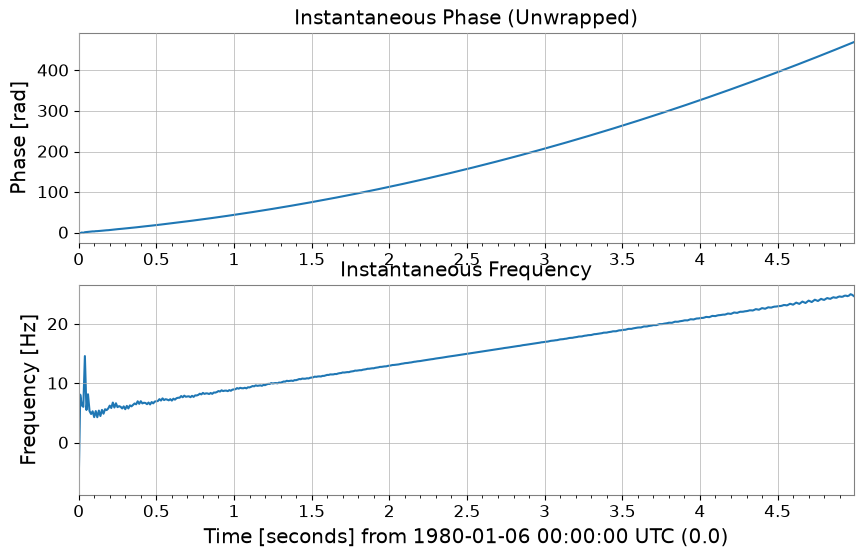
混合と復調 (Mix-down, Baseband, Lock-in)
特定の周波数成分を抽出したり、直流成分へ落とし込むための機能です。
[5]:
# 1. Mix down to 10 Hz so the narrowband line is shifted to baseband, where slow amplitude and phase changes are easier to measure.
ts_mixed = ts1.mix_down(f0=10)
# 2. Baseband adds low-pass filtering and decimation so the retained samples describe only the slow envelope, not the carrier itself.
ts_base = ts1.baseband(f0=10, lowpass=5, output_rate=20)
# 3. Lock-in detection averages against a phase-matched reference, which suppresses broadband noise while preserving the coherent 10 Hz component.
amp, ph = ts1.lock_in(f0=10, stride=0.1) # Output average every 0.1 seconds
res_complex = ts1.lock_in(
f0=10, stride=0.1, output="complex"
) # Output as complex numbers
print(amp)
plot = Plot(amp, ph, separate=True, sharex=True, figsize=(10, 6))
ax = plot.axes
ax[0].get_lines()[0].set_label("Amplitude")
ax[0].axhline(1.0, color="gray", linestyle="--", label="Theoretical (Sine amp=1)")
ax[0].set_ylabel("Amplitude")
ax[0].legend()
ax[1].get_lines()[0].set_color("orange")
ax[1].get_lines()[0].set_label("Phase [deg]")
ax[1].set_ylabel("Phase [deg]")
plot.figure.suptitle("Lock-in Amplification Result at 10Hz")
plt.show()
TimeSeries([1.07666762, 0.98248253, 0.89476852, 0.90184788,
1.05305958, 0.99133202, 0.99090156, 0.94721345,
1.32267423, 1.05039409, 1.14997673, 1.02442112,
1.14995427, 0.89617159, 0.9286758 , 0.94110608,
1.11806969, 0.9298531 , 1.02712403, 0.92128798,
1.01108711, 0.95696136, 0.94568705, 1.0778926 ,
1.12462112, 1.04576544, 0.95133129, 0.90010188,
0.89734123, 0.88829759, 1.16304449, 0.86537844,
1.12106041, 1.05786385, 0.92245457, 0.98567895,
1.01487653, 0.92300848, 1.10128751, 1.03334389,
1.09488053, 1.0300461 , 1.13570683, 1.12769463,
1.02802869, 0.8933523 , 1.0737406 , 1.02079184,
1.1061468 , 0.9651541 ],
unit: V,
t0: 0.0 s,
dt: 0.1 s,
name: Sensor 1,
channel: None)
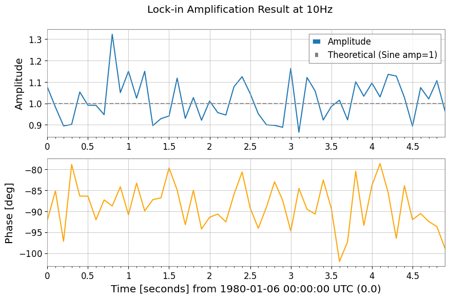
3. スペクトル解析と相関
GWpy の機能を継承しつつ、過渡信号向けの transient モード FFT や、FFT の直接比による伝達関数計算が追加されています。
拡張された FFT
mode="transient" を使用すると、ゼロパディングや高速な長さへの調整、左右個別のパディング指定が可能です。
[6]:
# Standard FFT is appropriate when the signal is roughly stationary over the full record and you want GWpy-compatible normalization.
fs_gwpy = ts1.fft()
# Transient mode is better for short-lived responses because padding reduces edge leakage that would otherwise distort amplitudes.
# pad_left/pad_right extend the event in time, and nfft_mode="next_fast_len" keeps that protection computationally cheap.
fs_trans = ts1.fft(
mode="transient", pad_left=0.5, pad_right=0.5, nfft_mode="next_fast_len"
)
plot = Plot(fs_gwpy.abs(), fs_trans.abs(), yscale="log", xlim=(0, 50), figsize=(10, 4))
ax = plot.gca()
ax.get_lines()[0].set_label("Standard FFT")
ax.get_lines()[1].set_label("Transient FFT (Padded)")
ax.get_lines()[1].set_alpha(0.7)
ax.legend()
ax.set_title("Comparison of FFT modes")
plt.show()
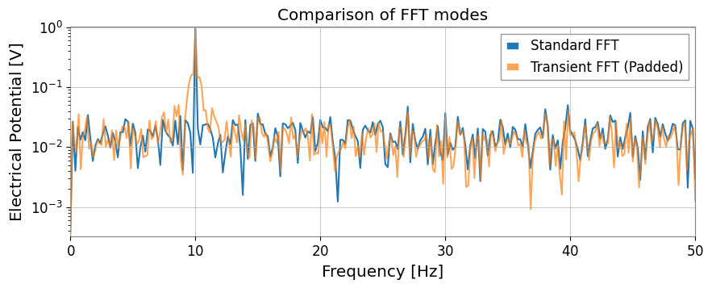
伝達関数 (Transfer Function) と相互相関 (xcorr)
transfer_function では Welch法 (mode="steady") だけでなく、FFT の直接比 (mode="transient") も選択できます。
[7]:
# Estimate the transfer function to ask whether Sensor 1 can linearly explain features in the chirping channel across frequency.
tf_welch = ts2.transfer_function(ts1, fftlength=1)
tf_fft = ts2.transfer_function(
ts1, mode="transient"
) # Full-span FFT ratio (useful for transient response analysis)
# Cross-correlation checks whether the two channels line up in time, which is a first sanity check before treating one as a witness for the other.
corr = ts1.xcorr(ts2, maxlag=0.5, normalize="coeff")
plot = Plot(figsize=(10, 6))
ax1 = plot.add_subplot(2, 1, 1)
ax1.semilogy(tf_welch.frequencies, np.abs(tf_welch), label="Welch method")
ax1.semilogy(tf_fft.frequencies, np.abs(tf_fft), label="Direct FFT ratio", alpha=0.5)
ax1.set_title("Transfer Function Magnitude")
ax1.legend()
ax2 = plot.add_subplot(2, 1, 2)
lag = corr.times.value - corr.t0.value
ax2.plot(lag, corr)
ax2.set_title("Cross-Correlation (normalized)")
ax2.set_xlabel("Lag [s]")
plt.show()
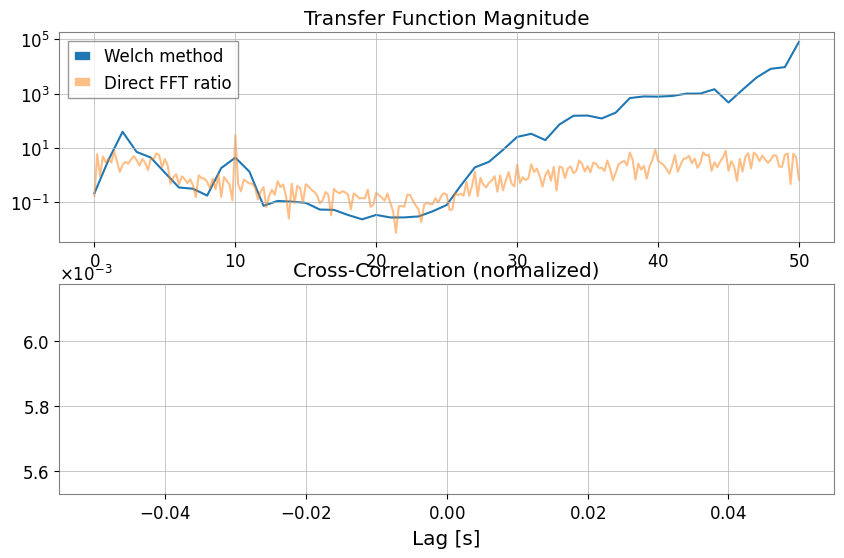
STLT (Short-Time Laplace Transform)
STLT (Short-Time Laplace Transform) は、信号の時間変化に伴う局所構造を抽出するための変換です。 gwexpy では STLT の結果は (time × sigma × frequency) の3D変換として TimePlaneTransform / LaplaceGram で表現されます。
以下は、stlt メソッドを使用して STLT を計算し、特定時刻のスライス (Plane2D) を抽出する例です。 この例では frequencies（Hz）を指定し、任意周波数点で STLT を評価します。
[8]:
# Data preparation (for demonstration)
import numpy as np
from gwexpy.plot import Plot
t = np.linspace(0, 10, 1000)
data = TimeSeries(np.sin(2 * np.pi * 1 * t), times=t * u.s, unit="V", name="Demo Data")
# STLT
# stride: time step, window: analysis window length
freqs = np.array([0.5, 1.0, 1.5]) # Hz
stlt_result = data.stlt(stride="0.5s", window="2s", frequencies=freqs)
print(f"Kind: {stlt_result.kind}")
print(f"Shape: {stlt_result.shape} (Time x Sigma x Frequency)")
print(f"Time Axis: {len(stlt_result.times)} steps")
print(f"Sigma Axis: {len(stlt_result.axis1.index)} bins")
print(f"Frequency Axis: {len(stlt_result.axis2.index)} bins")
# Extract plane at specific time (t=5.0s)
plane_at_5s = stlt_result.at_time(5.0 * u.s)
print(f"Plane at 5.0s shape: {plane_at_5s.shape}")
# Plane2D Confirm behavior as Plane2D
print(f"Axis 1: {plane_at_5s.axis1.name}")
print(f"Axis 2: {plane_at_5s.axis2.name}")
Kind: stlt
Shape: (17, 1, 3) (Time x Sigma x Frequency)
Time Axis: 17 steps
Sigma Axis: 1 bins
Frequency Axis: 3 bins
Plane at 5.0s shape: (1, 3)
Axis 1: sigma
Axis 2: frequency
4. Hilbert-Huang Transform (HHT)
非線形・非定常信号解析のためのヒルベルト・ファン変換 (HHT) 機能です。 Empirical Mode Decomposition (EMD) とヒルベルトスペクトル解析を組み合わせます。
[9]:
import warnings
with warnings.catch_warnings():
warnings.simplefilter('ignore')
# HHT (Hilbert-Huang Transform)
# Execute Empirical Mode Decomposition (EMD) and extract IMFs (Intrinsic Mode Functions)
# Note: Requires PyEMD (EMD-signal) : `pip install EMD-signal`
try:
import os
os.environ["TF_CPP_MIN_LOG_LEVEL"] = "2"
# EMDExecute EMD (returns dictionary)
# method="emd" (standard EMD) or "eemd" (Ensemble EMD)
# Here we use ts2 (example with chirp signal)
imfs = ts2.emd(method="emd", max_imf=3)
print(f"Extracted IMFs: {list(imfs.keys())}")
# Plot IMFs
sorted_keys = sorted(
[k for k in imfs.keys() if k.startswith("IMF")], key=lambda x: int(x[3:])
)
if "residual" in imfs:
sorted_keys.append("residual")
# gwexpy.plot.Plot for batch plotting
plot_data = [ts2] + [imfs[k] for k in sorted_keys]
plot = Plot(*plot_data, separate=True, sharex=True, figsize=(10, 8))
# Original settings
ax0 = plot.axes[0]
ax0.get_lines()[0].set_label("Original")
ax0.get_lines()[0].set_color("black")
ax0.legend(loc="upper right")
ax0.set_title("Empirical Mode Decomposition")
# IMF settings
for i, key in enumerate(sorted_keys):
ax = plot.axes[i + 1]
ax.get_lines()[0].set_label(key)
ax.legend(loc="upper right")
plt.show()
except ImportError:
print("EMD-signal not installed. Skipping HHT demo.")
except Exception as e:
print(f"HHT Error: {e}")
Extracted IMFs: ['IMF1', 'IMF2', 'IMF3', 'residual']

5. 統計・前処理
欠損値補完、標準化、ARIMAモデル、ハースト指数、およびローリング統計量が TimeSeries メソッドとして利用可能です。
[10]:
# Test data with missing values
ts_nan = ts1.copy()
ts_nan.value[100:150] = np.nan
# 1. impute: Missing value imputation (interpolation, etc.)
ts_imputed = ts_nan.impute(method="interpolate")
# 2. standardize: Standardization (z-score, robust, etc.)
ts_z = ts1.standardize(method="zscore")
ts_robust = ts1.standardize(method="zscore", robust=True) # Use Median/IQR
plot = Plot(ts_nan, ts_imputed, figsize=(10, 4))
ax = plot.gca()
ax.get_lines()[0].set_label("with NaNs")
ax.get_lines()[0].set_color("red")
ax.get_lines()[0].set_alpha(0.3)
ax.get_lines()[1].set_label("Imputed")
ax.get_lines()[1].set_linestyle("--")
ax.legend()
ax.set_title("Missing Value Imputation")
plt.show()
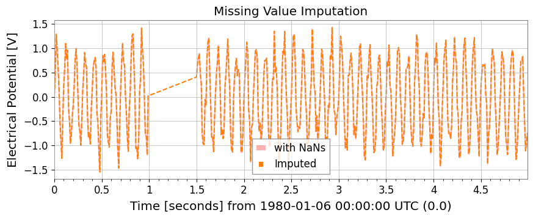
ピーク検出 (Find Peaks)
scipy.signal.find_peaks をラップし、時系列データからピークを検出します。
[11]:
# Peak Detection (Find Peaks)
# height, threshold, distance, prominence, width such asCan specify parameters such as
# Can also specify thresholds with units
# ts2 (Chirp + Sine) Find peaks in
peaks, props = ts2.find_peaks(height=0.0, distance=50)
print(f"Found {len(peaks)} peaks")
if len(peaks) > 0:
print("First 5 peaks:", peaks[:5])
# Plot
plot = ts2.plot(figsize=(12, 4))
ax = plot.gca()
ax.scatter(
peaks.times.value,
peaks.value,
marker="x",
color="red",
s=100,
label="Peaks",
zorder=10,
)
ax.legend(loc="upper right")
ax.set_title("Peak Detection Result")
plt.show()
Found 10 peaks
First 5 peaks: TimeSeries([ 0.21779568, -0.28157556, -0.37097234, 0.48196067,
-0.61630987],
unit: V,
t0: 0.19 s,
dt: 0.51 s,
name: Chirp Signal_peaks,
channel: None)
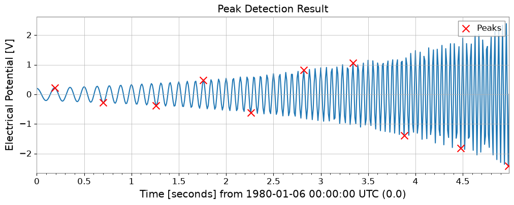
ARIMAモデルとハースト指数
※ これらの機能には statsmodels, hurst 等のライブラリが必要です。
[12]:
import warnings
with warnings.catch_warnings():
warnings.simplefilter('ignore')
try:
import os
os.environ["TF_CPP_MIN_LOG_LEVEL"] = "2"
# 3. fit_arima: ARIMA(1,0,0) fitting and forecasting
model = ts1.fit_arima(order=(1, 0, 0))
resid = model.residuals()
forecast, conf = model.forecast(steps=30)
plot = Plot(ts1.tail(100), forecast, figsize=(10, 4))
ax = plot.gca()
ax.get_lines()[0].set_label("Measured")
ax.get_lines()[1].set_label("Forecast")
ax.get_lines()[1].set_color("orange")
# Fill between
ax.fill_between(
conf["lower"].times.value,
conf["lower"].value,
conf["upper"].value,
alpha=0.2,
color="orange",
)
ax.set_title("ARIMA(1,0,0) Fit & Forecast")
ax.legend()
plt.show()
except Exception as e:
print(f"ARIMA skipping: {e}")
try:
import os
os.environ["TF_CPP_MIN_LOG_LEVEL"] = "2"
# 4. hurst / local_hurst: Hurst exponent (indicator of long-range correlation)
h_val = ts1.hurst()
h_detail = ts1.hurst(return_details=True) # With detailed information
h_local = ts1.local_hurst(window=1.0) # Evolution with 1-second window
plot = Plot(h_local, figsize=(10, 4))
ax = plot.gca()
ax.get_lines()[0].set_label("Local Hurst")
ax.axhline(h_val, color="red", linestyle="--", label=f"Global H={h_val:.2f}")
ax.set_ylim(0, 0.2)
ax.set_title("Hurst Exponent Analysis")
ax.legend()
plt.show()
except Exception as e:
print(f"Hurst skipping: {e}")
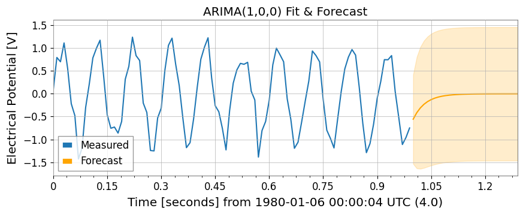
Hurst skipping: No Hurst backend found. Install hurst, hurst-exponent, or exp-hurst.
ローリング統計量 (Rolling Statistics)
Pandas と同様の使い勝手で、rolling_mean, std, median, min, max が利用できます。
[13]:
rw = 0.5 * u.s # 0.5 second window
rmean = ts1.rolling_mean(rw)
rstd = ts1.rolling_std(rw)
rmed = ts1.rolling_median(rw)
rmin = ts1.rolling_min(rw)
rmax = ts1.rolling_max(rw)
plot = Plot(ts1, rmean, rmed, figsize=(10, 4))
ax = plot.gca()
ax.get_lines()[0].set_label("Original")
ax.get_lines()[0].set_alpha(0.3)
ax.get_lines()[1].set_label("Rolling Mean")
ax.get_lines()[1].set_color("blue")
ax.get_lines()[2].set_label("Rolling Median")
ax.get_lines()[2].set_color("green")
ax.get_lines()[2].set_linestyle("--")
ax.fill_between(
rmean.times.value,
rmean.value - rstd.value,
rmean.value + rstd.value,
alpha=0.1,
color="blue",
)
ax.legend()
ax.set_title("Rolling Statistics (Window=0.5s)")
plt.show()
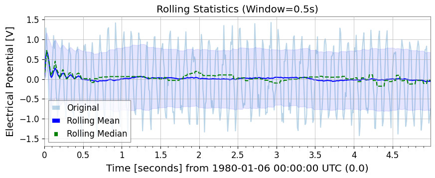
6. リサンプリングと再インデックス
asfreq メソッドによる固定グリッドへの割り当てや、resample メソッドでの「時間ビン集計」が可能になりました。
[14]:
# 1. asfreq: Reindex with Pandas-like naming conventions ('50ms' など)
ts_reindexed = ts1.asfreq("50ms", method="pad")
Plot(ts1, ts_reindexed)
plt.legend(["Original", ".asfreq('50ms', method='pad')"])
[14]:
<matplotlib.legend.Legend at 0x7f7dfcb69350>
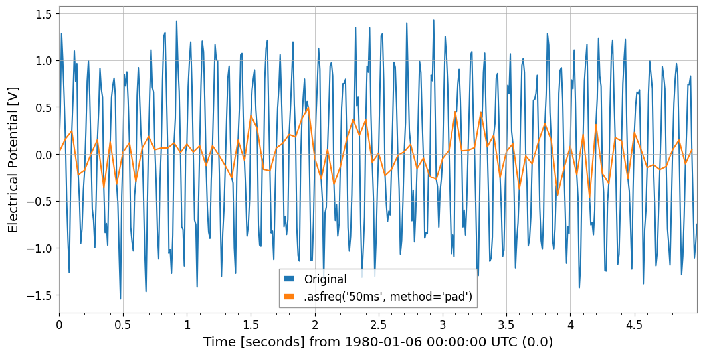
[15]:
# 2. resample:
# If you specify a number (10Hz) , signal processing resampling (GWpy standard)
ts_sig = ts1.resample(10)
# If you specify a string ('200ms') , statistics for each time bin (new feature)
ts_binned = ts1.resample("200ms") # Default is mean
# Plot doesn't have a direct 'step' method equivalent in args, so we use ax.step or pass to plot
# However, kwarg 'drawstyle'='steps-post' works in plot()? gwpy Plot wraps matplotlib.
# Let's assume we can modify axes after creation or use standard plot for simplicity if appropriate, but step is specific.
# Better strategy: Create Plot instance, then use ax.step
plot = Plot(figsize=(10, 4))
ax = plot.gca()
ax.plot(ts1, alpha=0.6, label="Original (100Hz)")
ax.step(
ts_binned.times,
ts_binned.value,
where="post",
label="Binned Mean (200ms)",
linewidth=2,
)
ax.legend()
ax.set_title("Resampling: Signal Resampling vs Time Binning")
plt.show()
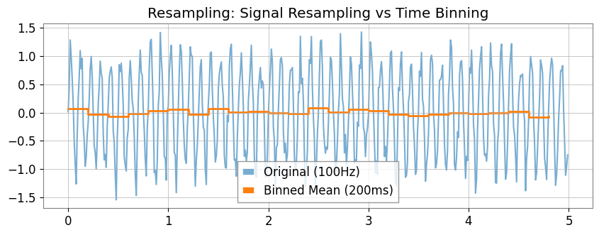
7. 関数によるフィッティング
gwexpy では iminuit をベースとした強力なフィッティング機能を提供しています。GWpy の元のクラスを汚染しないよう、.fit() メソッドはオプトイン方式になっています。
[16]:
from gwexpy.fitting.models import damped_oscillation
# Fit with damped oscillation model (pass function directly)
# Initial values: A=0.5, tau=0.5, f=15, phi=0
result = data.fit(damped_oscillation, A=0.5, tau=0.5, f=15, phi=0)
# Display result (iminuit format)
print(result)
# Get best-fit curve
# Note: x_data is the time array corresponding to data points
x_data = data.times.value
best_fit = result.model(x_data)
# Plot
plot = data.plot(label="Noisy Signal")
ax = plot.gca()
ax.plot(data.times, best_fit, label="Best Fit", color="red", linestyle="--")
ax.legend()
ax.set_title("Damped Oscillation Fit")
plt.show()
┌─────────────────────────────────────────────────────────────────────────┐
│ Migrad │
├──────────────────────────────────┬──────────────────────────────────────┤
│ FCN = 0.0005703 (χ²/ndof = 0.0) │ Nfcn = 324 │
│ EDM = 0.000176 (Goal: 0.0002) │ │
├──────────────────────────────────┼──────────────────────────────────────┤
│ Valid Minimum │ Below EDM threshold (goal x 10) │
├──────────────────────────────────┼──────────────────────────────────────┤
│ No parameters at limit │ Below call limit │
├──────────────────────────────────┼──────────────────────────────────────┤
│ Hesse ok │ Covariance accurate │
└──────────────────────────────────┴──────────────────────────────────────┘
┌───┬──────┬───────────┬───────────┬────────────┬────────────┬─────────┬─────────┬───────┐
│ │ Name │ Value │ Hesse Err │ Minos Err- │ Minos Err+ │ Limit- │ Limit+ │ Fixed │
├───┼──────┼───────────┼───────────┼────────────┼────────────┼─────────┼─────────┼───────┤
│ 0 │ A │ 1.00 │ 0.06 │ │ │ │ │ │
│ 1 │ tau │ 0 │ 0.06e6 │ │ │ │ │ │
│ 2 │ f │ 1.0000 │ 0.0025 │ │ │ │ │ │
│ 3 │ phi │ -0.00 │ 0.09 │ │ │ │ │ │
└───┴──────┴───────────┴───────────┴────────────┴────────────┴─────────┴─────────┴───────┘
┌─────┬─────────────────────────────────────────────────────┐
│ │ A tau f phi │
├─────┼─────────────────────────────────────────────────────┤
│ A │ 0.00354 -2.4033831e3 3e-6 -0.0001 │
│ tau │ -2.4033831e3 3.78e+09 -8.714e-3 38.287 │
│ f │ 3e-6 -8.714e-3 6.05e-06 -190e-6 │
│ phi │ -0.0001 38.287 -190e-6 0.00796 │
└─────┴─────────────────────────────────────────────────────┘
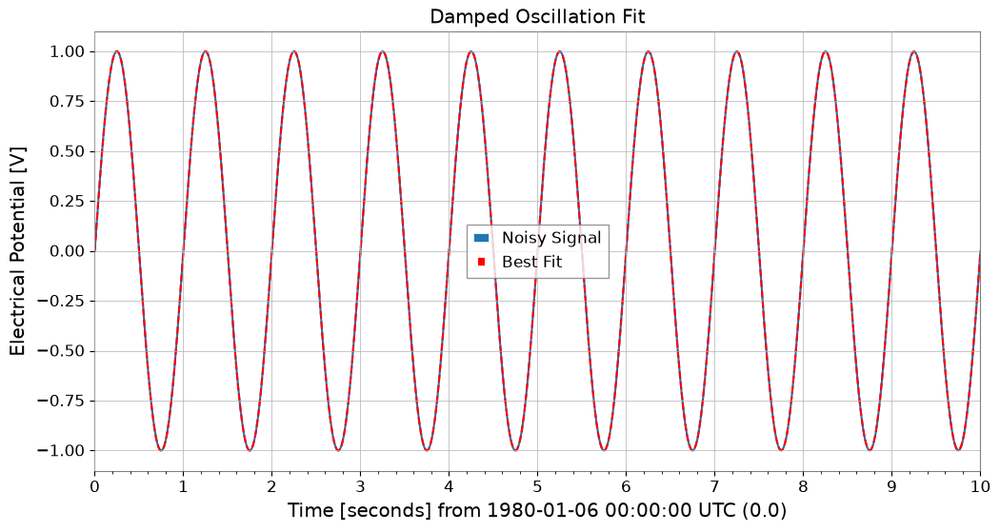
8. 相互運用性
主要なデータサイエンス・機械学習ライブラリとの相互変換が非常にスムーズです。
[17]:
import warnings
with warnings.catch_warnings():
warnings.simplefilter('ignore')
# Pandas & Xarray
try:
import os
os.environ["TF_CPP_MIN_LOG_LEVEL"] = "2"
df = ts1.to_pandas(index="datetime")
ts_p = TimeSeries.from_pandas(df)
print("Pandas interop OK")
display(df)
except ImportError:
pass
try:
import os
os.environ["TF_CPP_MIN_LOG_LEVEL"] = "2"
xr = ts1.to_xarray()
ts_xr = TimeSeries.from_xarray(xr)
print("Xarray interop OK")
print(xr)
except ImportError:
pass
Pandas interop OK
time_utc
1980-01-06 00:00:19+00:00 0.016881
1980-01-06 00:00:19.010000+00:00 0.450351
1980-01-06 00:00:19.020000+00:00 1.286839
1980-01-06 00:00:19.030000+00:00 0.988638
1980-01-06 00:00:19.040000+00:00 0.607367
...
1980-01-06 00:00:23.950000+00:00 0.045724
1980-01-06 00:00:23.960000+00:00 -0.523277
1980-01-06 00:00:23.970000+00:00 -1.110481
1980-01-06 00:00:23.980000+00:00 -0.956841
1980-01-06 00:00:23.990000+00:00 -0.749354
Name: Sensor 1, Length: 500, dtype: float64
[18]:
# SQLite (serialized storage)
import sqlite3
with sqlite3.connect(":memory:") as conn:
ts1.to_sqlite(conn, series_id="my_sensor")
ts_sql = TimeSeries.from_sqlite(conn, series_id="my_sensor")
print(f"SQLite interop OK: {ts_sql.name}")
display(conn)
SQLite interop OK: my_sensor
<sqlite3.Connection at 0x7f7df31e9d50>
[19]:
import warnings
with warnings.catch_warnings():
warnings.simplefilter('ignore')
# Deep Learning (Torch)
try:
import os
os.environ["TF_CPP_MIN_LOG_LEVEL"] = "2"
import torch
_ = torch
t_torch = ts1.to_torch()
ts_f_torch = TimeSeries.from_torch(t_torch, t0=ts1.t0, dt=ts1.dt)
print(f"Torch interop OK (Shape: {t_torch.shape})")
display(t_torch)
except ImportError:
pass
[20]:
import warnings
with warnings.catch_warnings():
warnings.simplefilter('ignore')
# Deep Learning (TensorFlow)
try:
import os
os.environ.setdefault("TF_CPP_MIN_LOG_LEVEL", "3")
warnings.filterwarnings(
"ignore", category=UserWarning, module=r"google\.protobuf\..*"
)
warnings.filterwarnings(
"ignore", category=UserWarning, message=r"Protobuf gencode version.*"
)
import tensorflow as tf
_ = tf
t_tf = ts1.to_tensorflow()
ts_f_tf = TimeSeries.from_tensorflow(t_tf, t0=ts1.t0, dt=ts1.dt)
print("TensorFlow interop OK")
display(t_tf)
except ImportError:
pass
[21]:
import warnings
with warnings.catch_warnings():
warnings.simplefilter('ignore')
# ObsPy (seismic waveform and time series analysis)
try:
import os
os.environ["TF_CPP_MIN_LOG_LEVEL"] = "2"
import obspy
_ = obspy
tr = ts1.to_obspy()
ts_f_obspy = TimeSeries.from_obspy(tr)
print(f"ObsPy interop OK: {tr.id}")
display(tr)
except ImportError:
pass
まとめ
このチュートリアルでは、gwexpy.TimeSeries の主要な拡張機能について学びました：
信号処理: Hilbert変換、復調、拡張FFTモード。
統計: 高度な相関手法 (MIC, Distance Correlation) と ARIMA モデリング。
データクリーニング: 欠損値補完と標準化。
相互運用性: Pandas, Xarray, PyTorch, TensorFlow, ObsPy とのシームレスな変換。
次のステップ
多チャンネルデータ: TimeSeriesMatrix で多数のチャンネルを一括処理する方法を学ぶ。
スペクトル解析: FrequencySeries を詳しく見る。
4Dフィールド: ScalarField で時空間解析を行う。